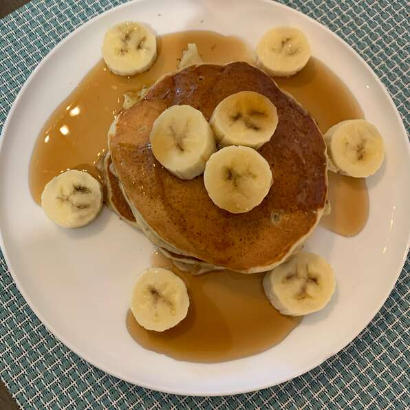

Banana Pancake Recipe

Description
Crowd-pleasing banana pancakes made from scratch that are ready in minutes. A fun twist on ordinary pancakes.
Ingredients
- 1 cup all-purpose flour
- 1 tablespoon white sugar
- 2 teaspoons baking powder
- ¼ teaspoon salt
- 1 egg, beaten
- 1 cup milk
- 2 tablespoons vegetable oil
- 2 ripe bananas, mashed
Steps
- Combine flour, white sugar, baking powder, and salt in a bowl.
Mix together egg, milk, vegetable oil, and bananas in a second bow
- Stir flour mixture into banana mixture; batter will be slightly lumpy.
- Heat a lightly oiled griddle or frying pan over medium high heat.
Pour or scoop the batter onto the griddle, using approximately 1/4 cup for each pancake.
Cook until pancakes are golden brown, 3 to 5 minutes per side. Serve hot.